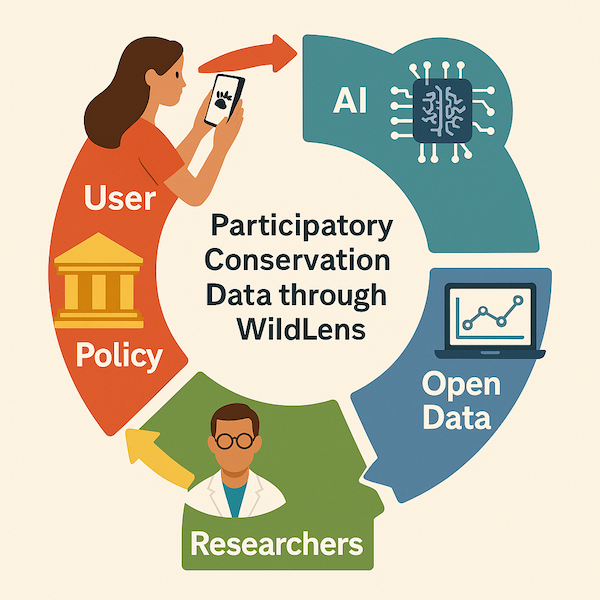
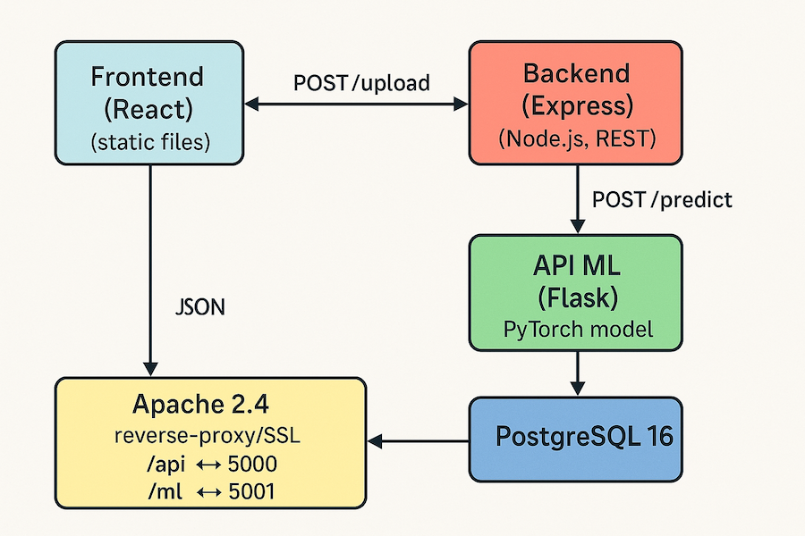
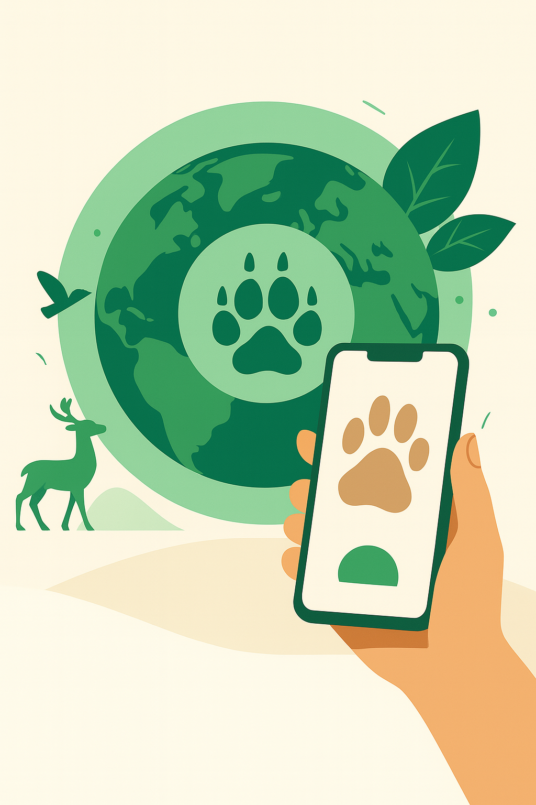
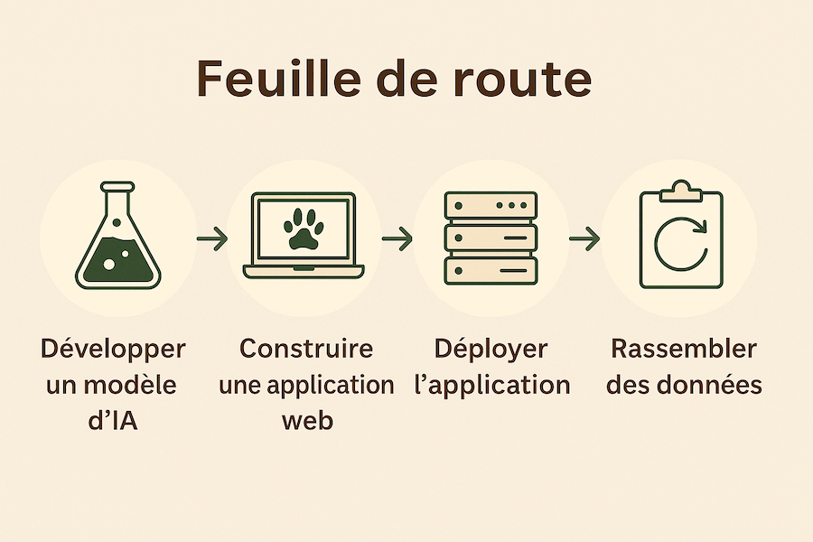
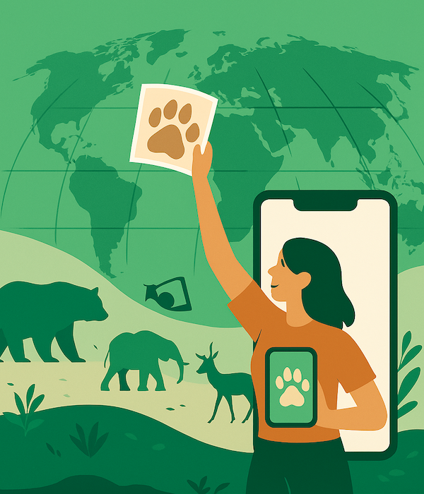

Cartographier la biodiversité ensemble
Crise de la biodiversité
- 3–4 espèces disparaissent chaque heure (IPBES 2023)
- 150–200 nouvelles espèces découvertes chaque année
- Sans données fiables, on avance « dans le brouillard »
Défis & conséquences
- Érosion accélérée → perte de services écosystémiques
- Suivi traditionnel coûteux et lent → Équipes limitées
- Participation citoyenne limitée → faible couverture
Architecture WildLens
Une chaîne open‑source complète : React · Express · PyTorch · PostgreSQL · Apache/SSL
Science participative
- Participation citoyenne → tout promeneur peut contribuer
- Qualité → validation croisée experts, système réputation
- Données ouvertes FAIR → API publique CC-BY-SA
- Impact → alertes précoces sur espèces invasives
Bénéfices pour tous

- Biologistes
- Parcs nationaux
- Universitaires
- Citoyens
- Pouvoirs publics & ONG
Feuille de route
- IA multi‑espèces (20 à 200)
- Capteurs LoRa
- Gamification & défis
- Alertes invasives
- Interopérabilité GBIF / iNat / eBird
Agissons ensemble !
Volontaires
Partagez vos photos, validez les observations, contribuez à la carte mondiale.
Agissons ensemble !
Institutions
ouvrez vos bases de données, pilotez WildLens dans vos réserves
Agissons ensemble !
Financeurs
50 k € couvrent serveurs GPU et déploiement dans trois parcs pilotes.
Agissons ensemble !
Développeurs
forkez sur GitHub, proposez des PR ! Licence MIT.